Instalación de Wincaja Versión 5
Una vez descargado el archivo, hay que ejecutarlo, le aparecerá la siguiente pantalla:
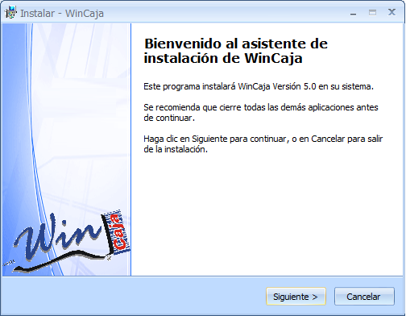Click en siguiente.
Le aparecerá el contrato de licencia.
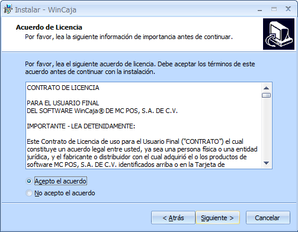Click en siguiente.
Le aparecerá la ruta de instalación.
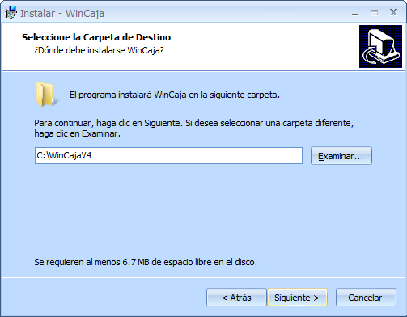Click en siguiente.
Le aparecerá la pantalla para seleccionar componentes. Es muy importante que la primera vez que actualiza tenga seleccionado “Drivers del Sentinel Hasp SL”.
Otro punto importante es determinar la versión de Winconta que desea instalar. Si la computadora tiene es de 64 bits deberá elegir “WinConta 64 bits” En caso contrario “Winconta”.
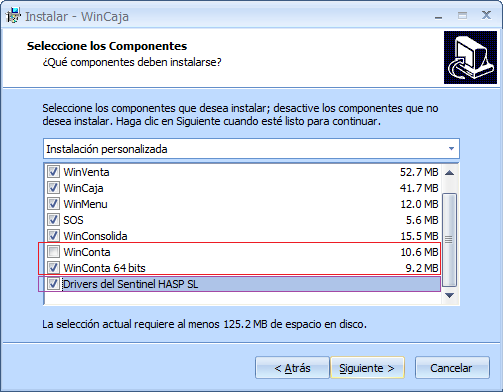Click en siguiente.
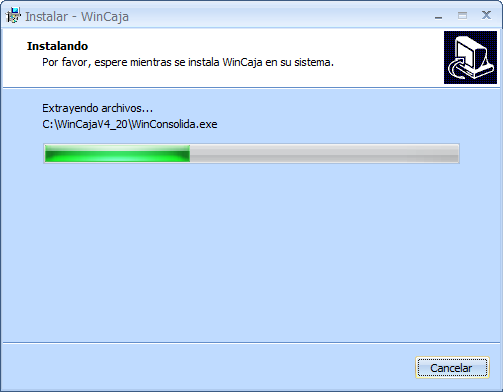 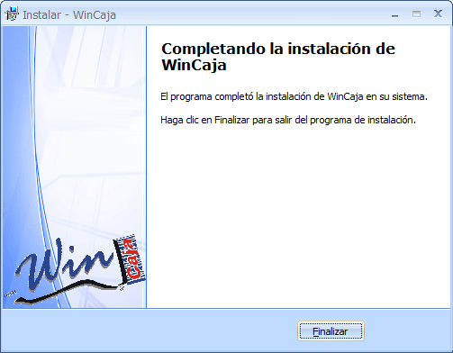Click en Finalizar.
Una vez que haya instalado la versión 5 de Wincaja, deberá ejecutar el programa SOS.
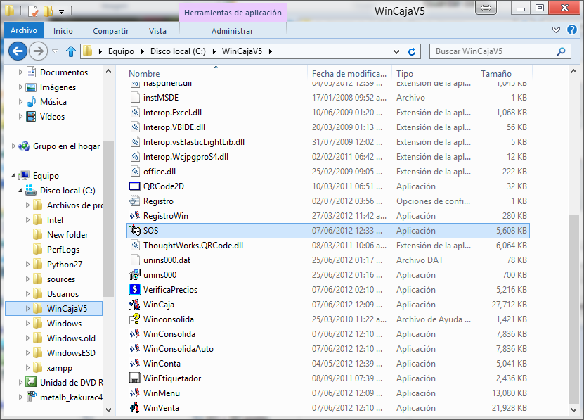Debe entrar al menú “Empezar” y elegir la opción “Solicitud de claves”
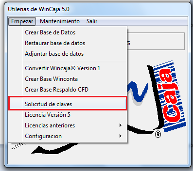En la pantalla mostrada deberá teclear sus datos. Es importante que llene los datos que están en azul.
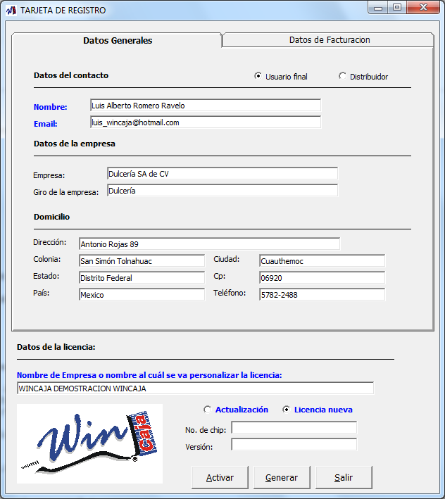Al terminar de llenar el formulario, click en “Generar”.
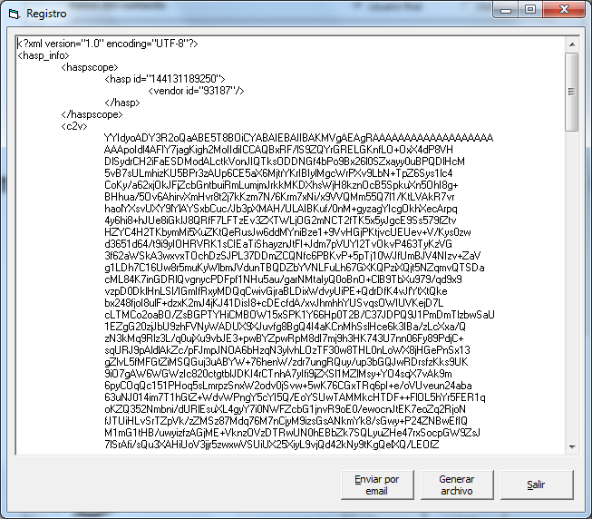Si tiene Internet, entonces click en “Enviar por email”, en caso contrario click en “Generar archivo”. Deberá guardar el archivo en una carpeta y posteriormente hacer llegar el archivo por correo electrónico a Wincaja.
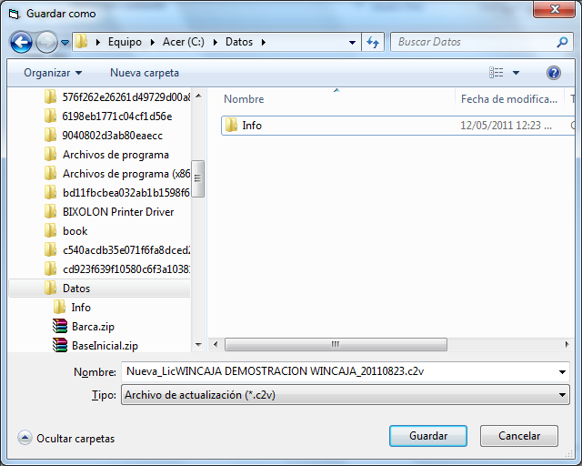Activar licencia
Una vez que le llegue el correo electrónico con la licencia de Wincaja, deberá entrar al programa “SOS”, en el menú “Empezar” seleccionar la opción: “Solicitud de claves”.
Click en “Activar”.
Aparecerá la pantalla de actualización de la licencia. Deberá buscar el archivo *.v2c que se le proporcionó.
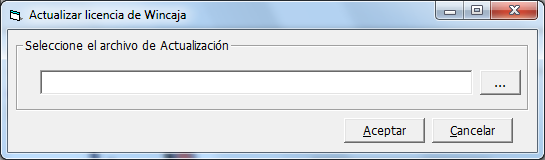 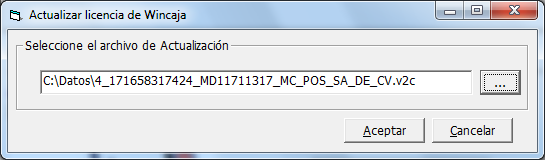Click en Aceptar, para dar de alta la licencia.
Para seleccionar el tipo de licencia, tiene que entrar a Wincaja y en configuración de sistema, elegir el tipo de centinela HASP SL.
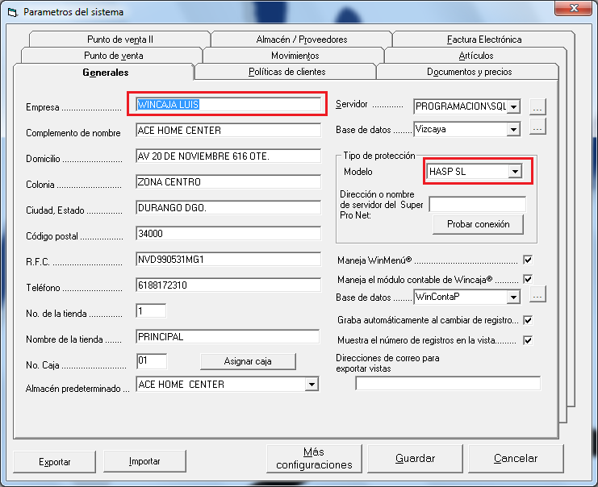